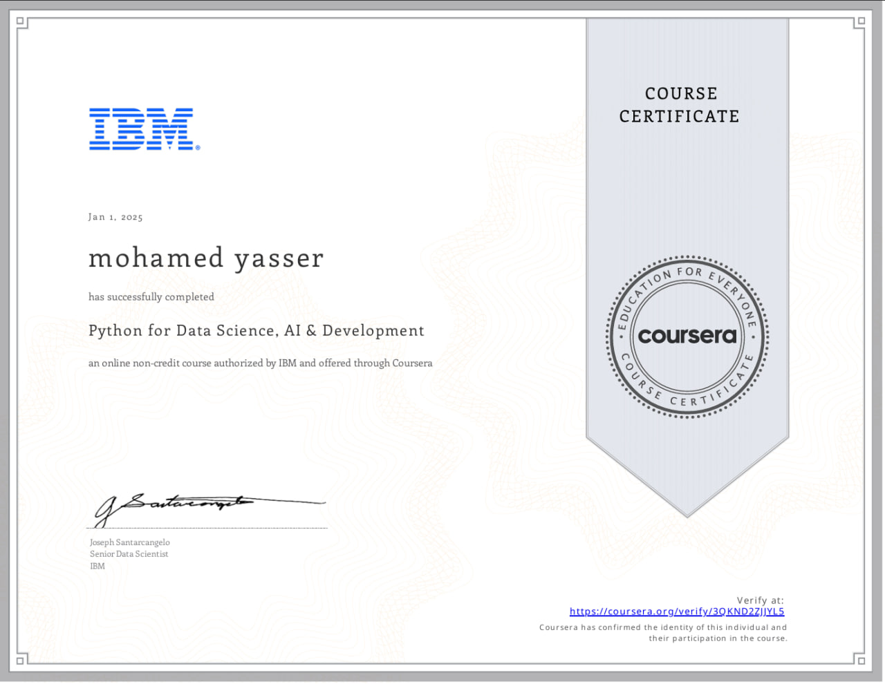
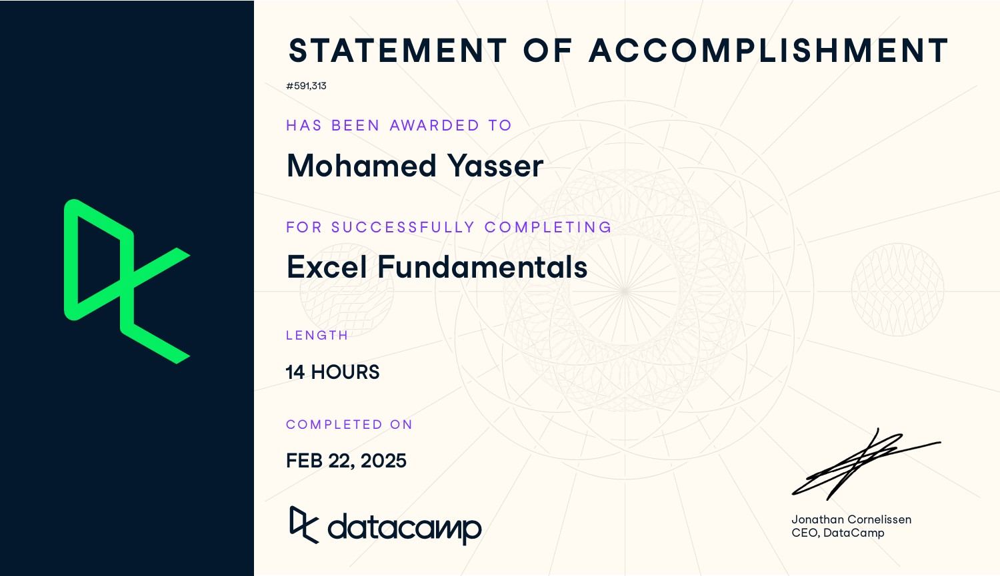

Hi! I'm Mohamed Yasser, a passionate developer specializing in web development and data science. I study at the Faculty of Computers and Information, majoring in Data Science. Welcome to my portfolio!
Skills
90%
Python
96%
Data visualization
75%
SQL
85%
HTML
60%
CSS
94%
Excel
93%
Power BI
Certificates

Python for Data Science, AI, and Development - Coursera
Databases and SQL for Data Science with Python - Coursera

Excel Fundementals - Data Camp
DA with excel power tools - Data Camp
POWER BI Fundamentals - Data Camp
Projects
Titanic Data Analysis
- Cleaned and explored the Titanic dataset using Python (Pandas, Matplotlib, Seaborn).
-Performed data preprocessing, handled missing values, and transformed data for better
insights.
- Analyzed survival rates based on gender, class, and other factors to identify key patterns.
- Created visualizations to effectively present findings.
-Tools: Power BI (Power Query, DAX, Data Modeling)
-Description: Designed a dynamic Power BI dashboard to analyze customer behavior and
churn patterns. Implemented data transformations, created calculated measures using DAX,
and built interactive visuals to provide actionable insights for decision-making.